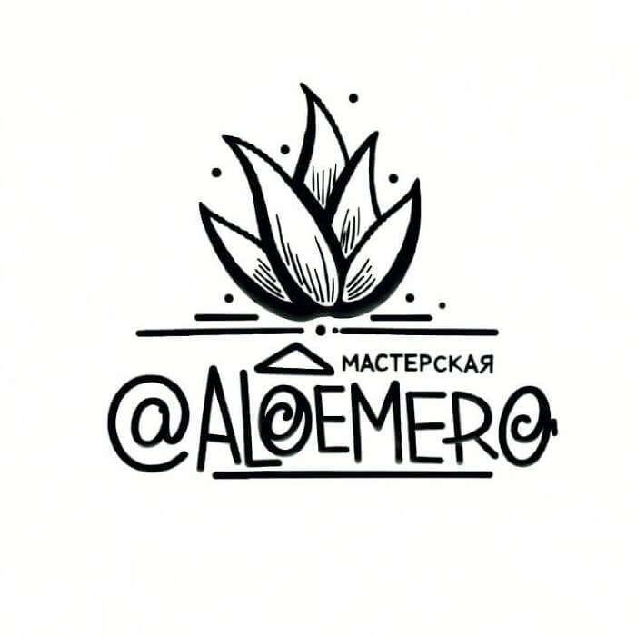
Авторская скульптура ручной работы, которая становится частью пространства.
Мастерская ALOEMERO работает больше 5 лет. Делаем художественную скульптуру: парковую (включая садово-парковую) и интерьерную.
Парковая и садово-парковая скульптура
Статуи, фигуры для фонтанов, оформление входных групп, малые архитектурные формы.
Интерьерная скульптура и декор
Имитация скал и рельефа, барельефы, горельефы, декоративные элементы интерьера.
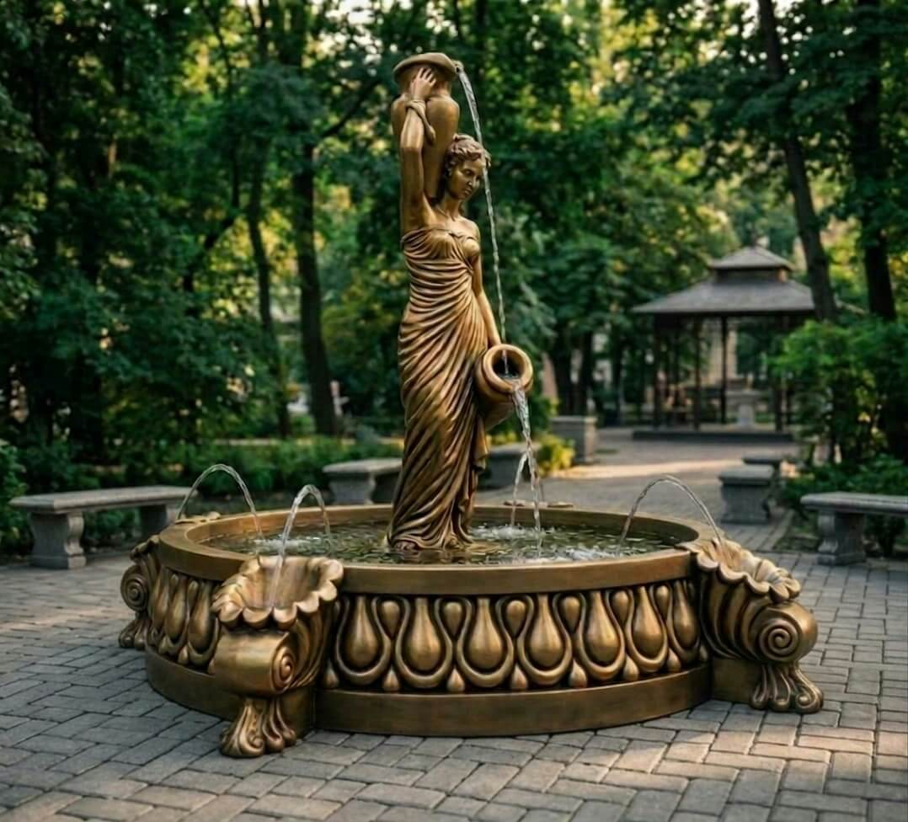
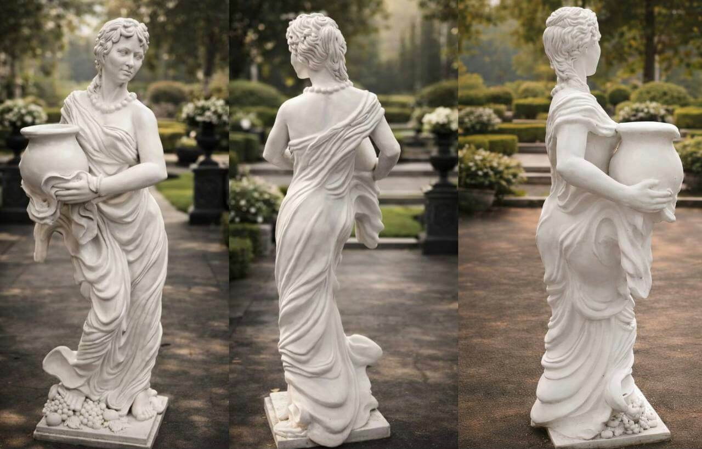
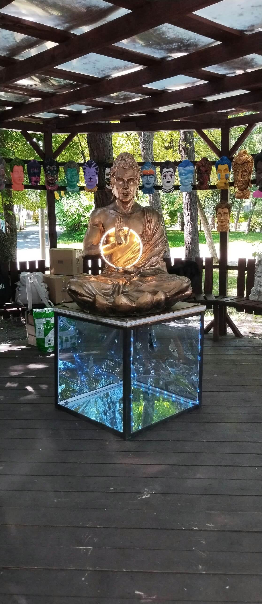
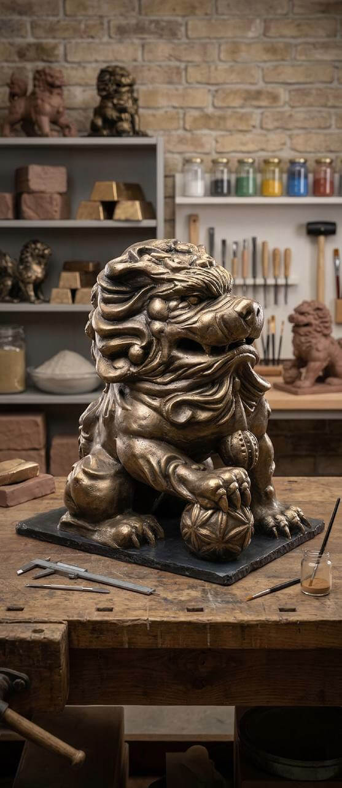
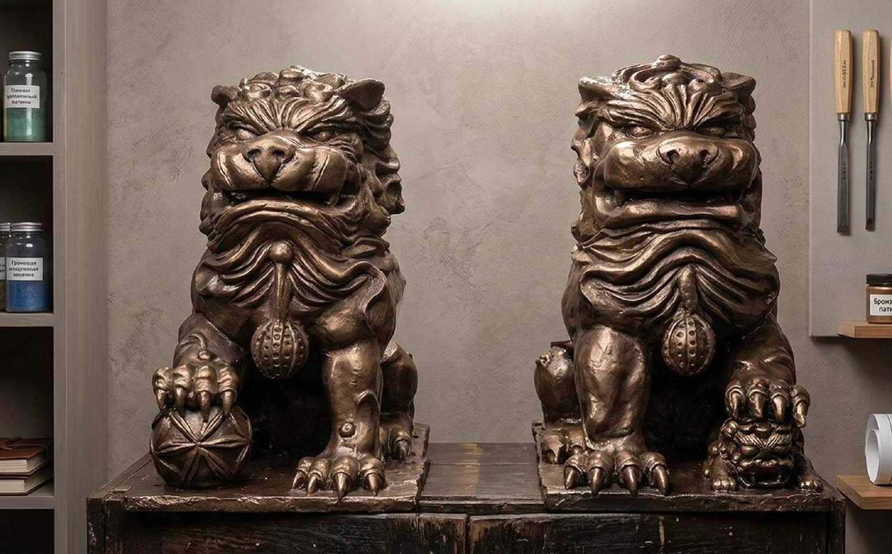
Ручная лепка, плотные объёмы, индивидуальная палитра под помещение.
Каждая работа авторская и проектируется под конкретное пространство.
Жилые пространства
Коммерческие пространства
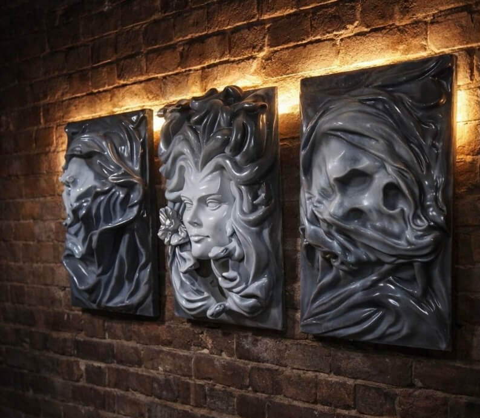
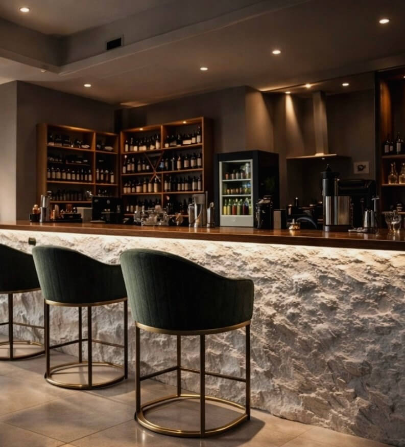
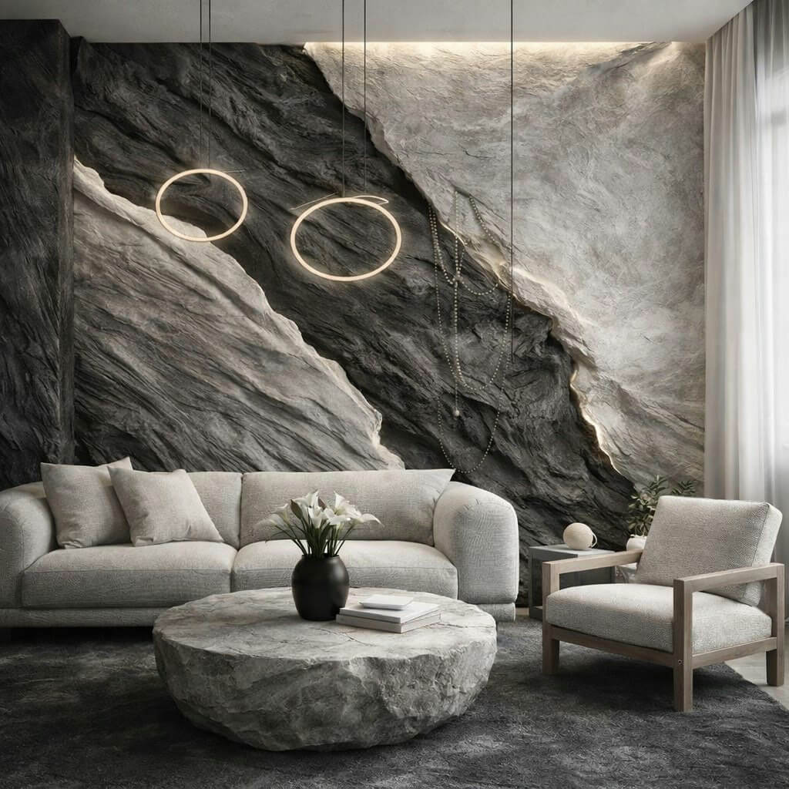
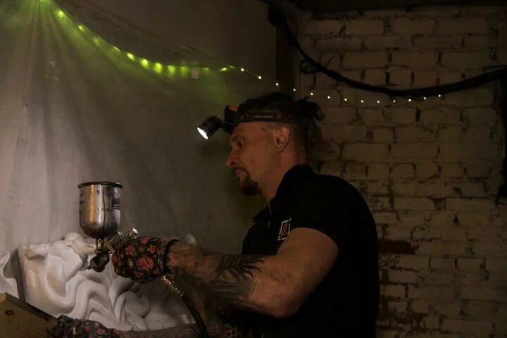
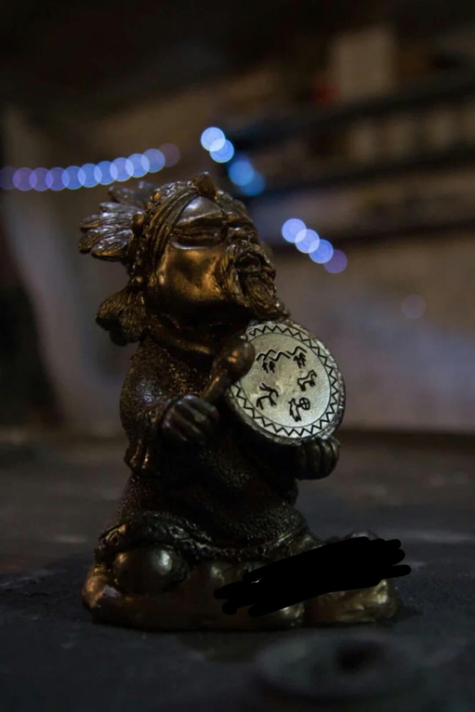
Ведём проект целиком — от первого эскиза до установки на месте.
Армированные составы
Не боятся влаги, температурных перепадов и механических нагрузок.
Считаем индивидуально
Каждая скульптура авторская и привязана к пространству. На цену влияют художественная концепция, габариты, материалы и сроки производства.
Атмосферостойкие составы
Для уличных работ — устойчивые к перепадам температур, влажности и механическим нагрузкам.
Гипс
Пластичный, быстро схватывается, держит мелкую детализацию.
календарных дней
с момента, как утвердили визуализацию